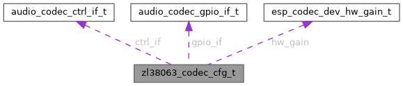

|
TermostatBox3
|
ZL38063 codec configuration Notes: ZL38063 codec driver provide default configuration of I2S settings in firmware. Defaults are 48khz, 16 bits, 2 channels To playback other sample rate need do resampling firstly. ...
#include <zl38063_codec.h>

Javni atributi | |
| const audio_codec_ctrl_if_t * | ctrl_if |
| const audio_codec_gpio_if_t * | gpio_if |
| esp_codec_dec_work_mode_t | codec_mode |
| int16_t | pa_pin |
| bool | pa_reverted |
| int16_t | reset_pin |
| esp_codec_dev_hw_gain_t | hw_gain |
ZL38063 codec configuration Notes: ZL38063 codec driver provide default configuration of I2S settings in firmware. Defaults are 48khz, 16 bits, 2 channels To playback other sample rate need do resampling firstly.
| esp_codec_dec_work_mode_t zl38063_codec_cfg_t::codec_mode |
Codec work mode: ADC or DAC
| const audio_codec_ctrl_if_t* zl38063_codec_cfg_t::ctrl_if |
Codec Control interface
| const audio_codec_gpio_if_t* zl38063_codec_cfg_t::gpio_if |
Codec GPIO interface
| esp_codec_dev_hw_gain_t zl38063_codec_cfg_t::hw_gain |
Hardware gain
| int16_t zl38063_codec_cfg_t::pa_pin |
PA chip power pin
| bool zl38063_codec_cfg_t::pa_reverted |
false: enable PA when pin set to 1, true: enable PA when pin set to 0
| int16_t zl38063_codec_cfg_t::reset_pin |
Reset pin